场景一
导航数据库管理
⏲ 计划 13 分钟 | 责任人：肖伟业
情报工程师
- 导航数据库来源合法性验证 — Honeywell（LOA Type II）、Jeppesen（LOA Type I）
- 数据周期管理全流程展示 — 识别号 ZH52605001 / 2605 期（有效期至 2026.06.11）
- 关键航路点、进近程序数据校核 + 航科院三方比对
- 机载设备兼容性验证（FMS 软硬件版本确认）
- 应急程序 — 公司通告发布（例：喀什 ZWSH 08 号 RNP 进近程序错误告警）
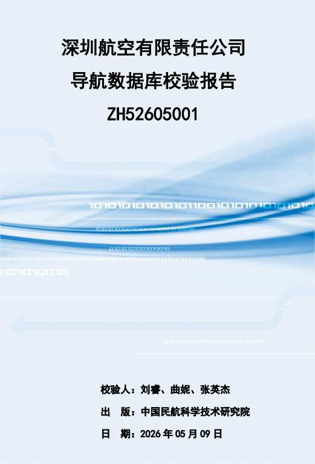
深圳航空导航数据库校验报告封面
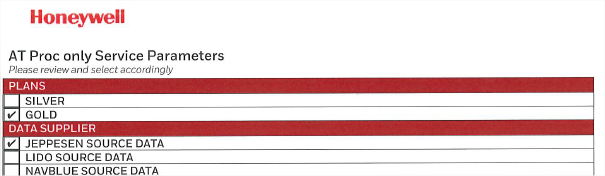
Honeywell 数据供应商 LOA 认证
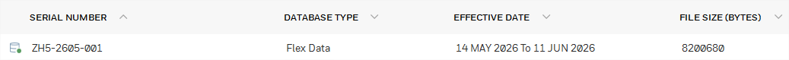
数据库 ZH5-2605-001 信息
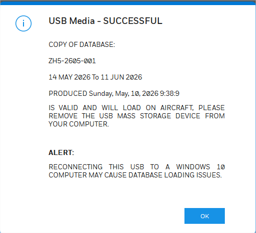
导航数据 USB 加载成功确认
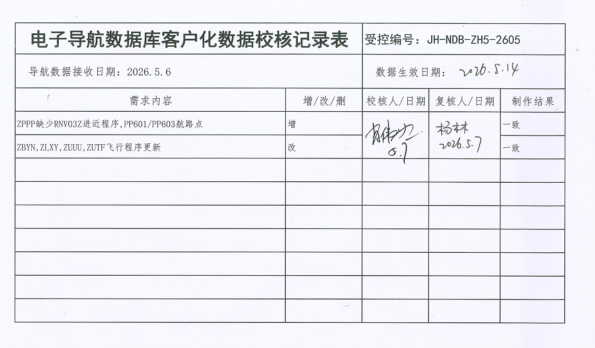
电子导航数据库客户化数据校核记录表
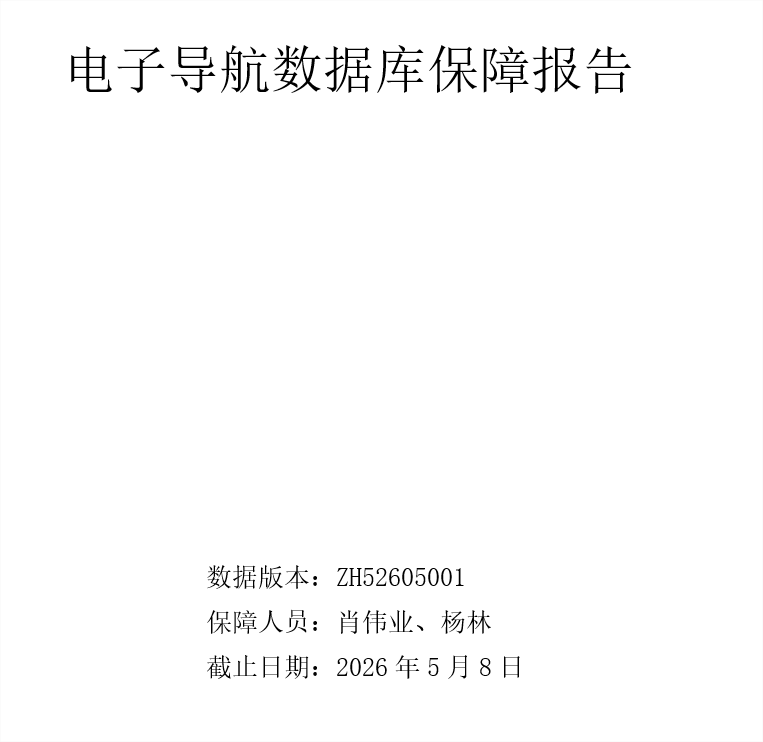
电子导航数据库保障报告
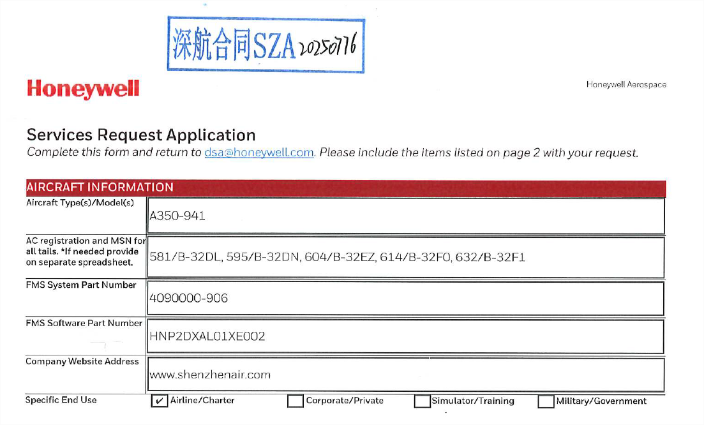
Honeywell Services Request - A350-941
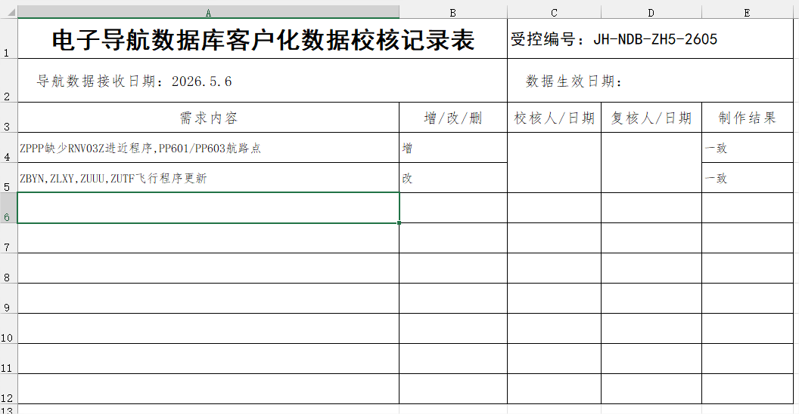
电子导航数据库客户化数据校核记录（Excel）
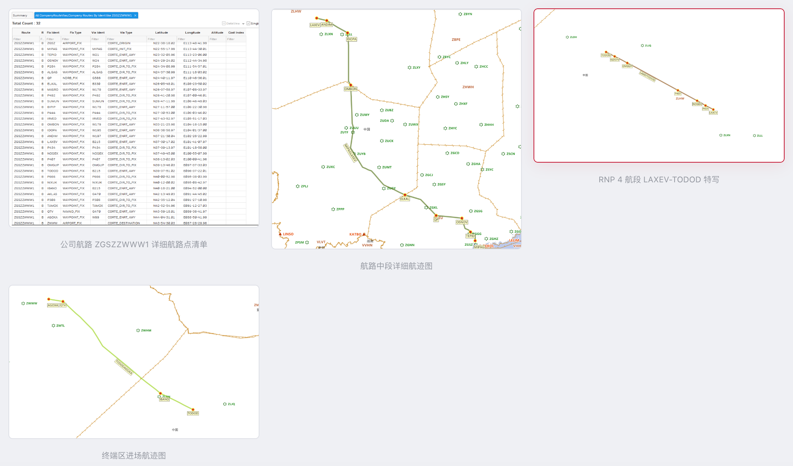
导航数据库校验 — 关键航路点、进近程序数据校核
场景二
正常放行
⏲ 计划 14 分钟 | 07:10 签派评估放行 · 维修 + 签派 + 飞行协同
谌中银 · 签派评估
王国庆 · 维修放行
陈孝臣 · PF
刘博 · PM
✎ 签派处置要点
RAIM 预测分析
ZWWW RNP 0.3 — 16:21-16:30 不可用
RWY08 方向该时段内无可用程序，需在 16:30 后建立最后进近
按最后进近 5 分钟推算：落地时间需在 16:35 之后
⇒ 航班需在 10:50 后起飞
航路 RAIM 评估
AKNAV-PASLU 段 RNP 2.0 — 12:00-12:12 不可用
航班晚 10 分钟起飞可能涉及，需找情报确认沿途导航台覆盖，向管制确认导航方案
LAXEV-TODOD 段 RNP 4 — RAIM 预测可用（航科院 FDE 打开结果）
机场设施 & 备降场评估
ZWWW — RWY08L/08R ILS 关闭，预计使用 08 号 RNP APCH
ZWTL — RWY09 ILS 关闭，盲降不可用
目的地和备降场不可同时使用 RNP APCH
⇒ ZWTL 使用 VOR 标准，备降标准：164/3500
ZWSH 天气和机场设施良好，选择作为备降场
气象信息
METAR ZWWW 092300Z 08005MPS CAVOK 31/M04 Q1014 NOSIG
TAF ZWWW 092104Z 1000/1106 08006MPS CAVOK
METAR ZWTL 092300Z VRB03MPS CAVOK 33/M09 Q1013
TAF ZWSH 092110Z 1000/1106 06003MPS 6000 FEW040
✈ 飞行机组处置要点
接收放行资料
核对放行资料和航路
通过构型汇总确认飞机满足 RNP APCH 运行要求
OIS 准备阶段确认飞机无故障
如故障查询 MEL 确认是否影响 PBN 运行
离场前要求
✓ 必须的设备 — 证实
1 部 FMS、1 部 GPS / 2 部 DME、2 部 IRS、1 部 NAV 方式 FD
✓ 机场温度 — 在限制内
✓ NAV PRIMARY 能力 — 证实
离场前程序
• NAVAID 抑制 — 按需
• 离场进近程序 — 选择
• RNP 值 — 检查设置
• 一发失效离场程序 — SEC FPLN 中输入（如适用）
• NAV PRIMARY — 证实
显示设置 · DISPLAYS
• TAWS 各模式 — 检查接通
• ND 方式 — ARC
• 距离圈 — 按需
• NAV — 预位
离场简令
PF — 完成正常简令外，简述离场程序（含速度/高度限制）、一发失效程序
PM — 证实 FPLN 与简述一致
最大偏差 · 一发失效
水平偏差
• 1/2 RNP 值 — 提醒
• 1 倍 RNP 值 — 断开 AP 修正偏差
一发失效程序
• 油门 — TOGA
• NAV — 立刻选择
• 遵守速度和高度限制
• 决策点之前生效 SEC FPLN
场景三
FMS 选择器故障
⏲ 计划 25 分钟 | 08:30 · 放行后、起飞前出现故障
王国庆 · 维修排故
谌中银 · 签派评估
陈孝臣 · PF
刘博 · PM
08:30 — 维修工程部 MCC 反馈：飞机参考 MEL 22-70-02A 保留 FMS 选择器，失效在 BOTH ON 1 位置。
✎ 签派处置要点
MEL 运行限制
当 FMS 选择器在 BOTH ON 1 位不工作（O 项）：
✗ 不允许运行 RNAV 10、RNP 4、RNP 2
✗ 不允许要求两部 RNAV 系统的 RNAV 1、RNAV 2 终端程序
✗ 不允许 RNP AR 运行
航段影响评估
LAXEV → TODOD（RNP 4） 受影响
▶ 找情报确认沿途导航台覆盖
▶ 向管制确认导航方案
情报确认：沿途 VOR 覆盖满足要求
不受影响程序
✓ ZGSZ 离场 — RNP 1，ILS 可用
✓ ZWWW 进场 — RNP 1，ILS 可用
✓ ZWTL 进近 — RNP APCH，不受影响
放行修订
修改 FPL，删除 18 项 PBN 中 A1 / L1 / T1，发布修订放行单
✈ 飞行机组处置要点
按照程序处置：
• 查询 MEL 手册，确认限制条件
• 评估是否影响 PBN 运行
• 不影响 PBN 运行 — 正常执行航班
⚙ 维修处置要点
保留路径
• 执行 FMC 系统测试，确定 FMS 选择器故障
• 查询 MEL 22-70-02A：可保留 FMS 选择器
• 条件：所有 FMC 工作正常
• 无 M 项，有 O 项
• 通知签派与飞行评估保留影响
无法保留时
• 领取航材更换 FMS 选择器 4CC
• 更换后再次执行 FMC 系统测试
• 测试正常后 — 放行飞机
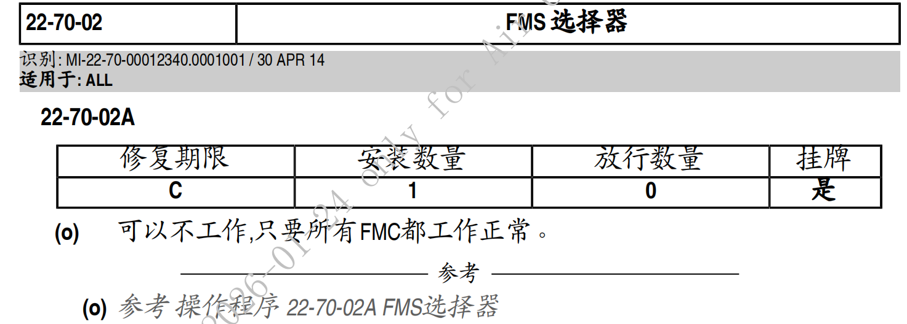
MEL 22-70-02 FMS 选择器 - 修复期限与放行要求
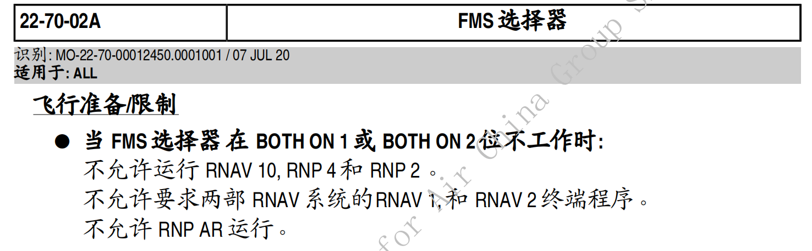
MEL 22-70-02A — FMS 选择器失效运行限制
场景四
起飞后双 GPS 干扰失去信号
⏲ 计划 22 分钟 | 09:30 撤保留 · 11:00 起飞 · 12:10 GPS PRIMARY LOST
陈孝臣 · PF
刘博 · PM
谌中银 · AOC 会商
王国庆 · 维修监控
→
→
故障触发
12:10
GPS PRIMARY LOST
✎ 签派处置要点（AOC 会商）
1. 位置监控切换
ADS-B 失去位置信号 → 使用 ACARS 位置监控
通知机组：存在异常情况时及时通报 AOC
2. RNP 4 航段运行方案（LAXEV → TODOD）
GPS 信号失去后无法执行 RNP 4，需确认方案：
① 确认 B215 传统导航台覆盖 — 联系情报
② 联系空管 — 确认雷达监视引导 + 拉大间隔
③ 若以上均不可行 → 制定空中改航方案，确认油量 → 通知空管
3. 备降决策
提前确认备降方案 → 得出决策点
到达决策点前故障未恢复 + 无改航方案 → 不能继续向前
无法制定改航方案 → 备降
本航班方案：LAXEV 之前不满足要求 → 返航 兰州 ZLLL
（计算着陆重量、兰州着陆距离）
4. 终端区能力
✓ ZWWW 具备传统进场 + ILS
✓ ZWTL 可用 VOR 程序
5. 乌鲁木齐进近通报
乌鲁木齐进近涉及 ADS-B 管制，需通知管制
✈ 飞行机组处置要点
1. ECAM 程序处置
• 按照 ECAM 程序处置
• 监控导航精度
• 通报 ATC
• 寻求雷达监控
2. GNSS 干扰程序
参考 FCOM 补充程序 — GNSS 干扰程序
3. 复位程序
脱离干扰区域后，按需执行相关复位程序
场景五
RNP APCH 进近 — 单套 FMC 失效
⏲ 计划 32 分钟 | 13:00 GPS 恢复 · RWY 08L RNP APCH · FMC 2 故障
陈孝臣 · PF
刘博 · PM
谌中银 · 签派支持
王国庆 · 维修监控
✈ 进近准备与执行
进近前的要求
✓ 必须的设备 — 证实
1 部 FMS、1 部 GPS、1 部 IRS、1 部 NAV 方式 FD
✓ 机场温度 — 在限制内
进近前程序
MFD
• NAVAID 抑制 — 按需
• RNP APCH 进近程序 — 选择
• 决断高度（高）输入 —（低温修正）按需
• RNP 值 — 检查
DISPLAYS
• TAWS 各模式 — 检查接通
• ND 方式 — ARC
• NAV — 生效
进近简令
PF — 正常简令外，简述 RNP 进近程序（速度/高度限制）、复飞程序、一发失效程序
• 检查 FMS 数据库的进近编码
• 进近能力降级的战略
• 低于最低标准的飞行技术（如：断开 AP 时机、FD OFF / BIRD ON 时机）
PM — 证实 FPLN 与简述一致
FAF 点以前
• NAV PRIMARY — 检查
• 高度表 — 交叉检查误差 < 100 英尺
• APPR 按钮 — 按压
• APP — 检查显示
在 FAF 点
• LOC/F-GS（或 NAV/FPA 仅 LNAV）— 生效
• 复飞高度 — 在 F-GS* 后设置
⚠ 降级管理与复飞程序
仅 LNAV 降级 — 立即复飞
• 两部 ND 上 NAV PRIMARY LOST
• XTK > 0.3 NM
• ECAM 上 NAV GNSS/ACFT POS DISAGREE
LNAV/VNAV 降级 — 立即复飞
• 失去 F-APP 能力
• F-LOC 偏离超过一个点
• F-GS 超过 / 低于 1/2 点
复飞程序
• 油门 — TOGA / TOGA SOFT
• NAV — 检查
• 遵守复飞程序的速度和高度限制
FAF 前 / 后差异化策略
FAF 点以前失去 RNP 能力：
• 按照 ECAM 或检查单程序执行
• 可转为传统仪表飞行
• 或保持目视（目视飞行气象条件）
• 或要求雷达引导中止进近
FAF 点以后系统失效（仪表飞行气象条件）：
▶ 复飞
处置总则
RNP 按进近准备程序查询进入前所需设备，确保满足执行 RNP APCH 进近设备要求；进入进近阶段后，按降级后的处置程序处置。